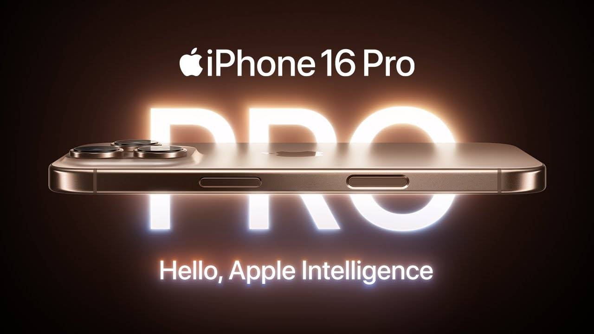
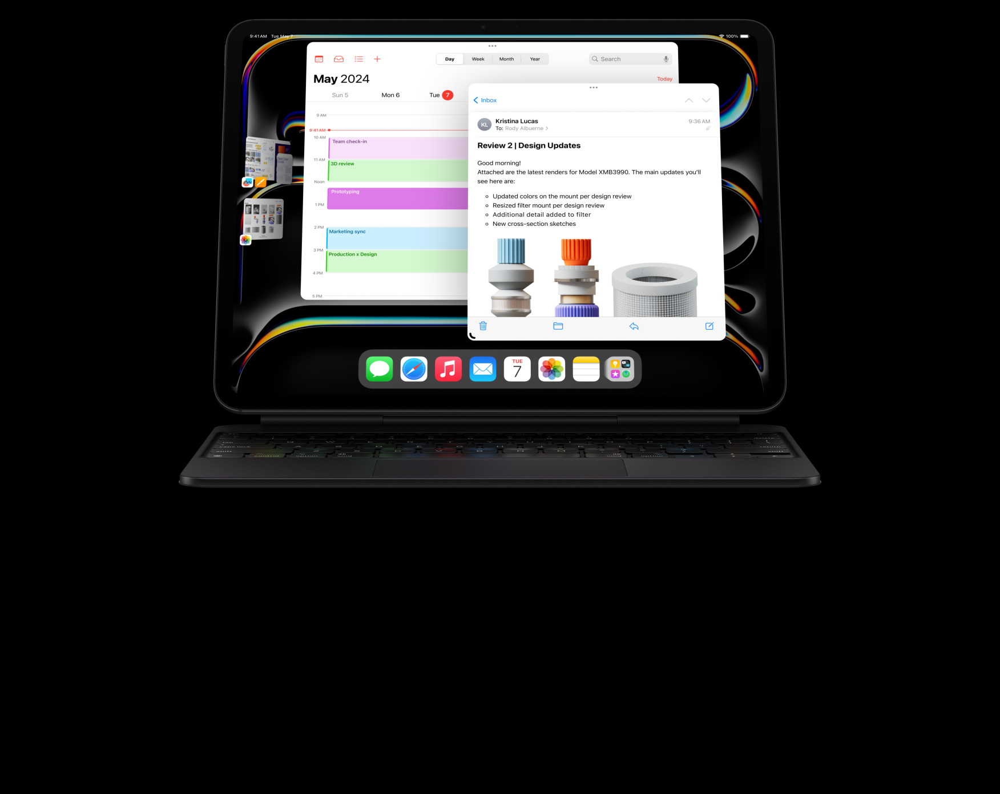
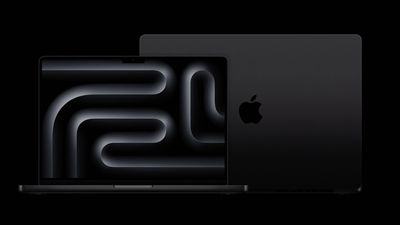

iPhone 16 Pro
Hello, Apple Intelligence
The iPhone 16 Pro is one of the most unfinished products Apple has ever shipped. Almost all of its highlight features will arrive in future software updates that will stretch well into next year before they’re here. That’s big stuff, like the new Apple Intelligence AI features the company says will start slowly arriving in October, and little stuff, like the complete functionality of the new Camera Control button on the side
Our iPhone LineUp
- iPhone 16 Pro
- iPhone 16
- iPhone 15 Pro
iPad Pro
Unbelieveably thin, Incredibly Powerful
The new iPad Pro is a genuine achievement in tablet design. It’s the closest thing I’ve ever seen to the vision that a tablet should feel not like a computer but, rather, like a piece of glass in your hand. I’m honestly not sure how you’d shrink it more; the USB-C plug I use to charge the 13-inch Pro I’ve been testing is already thicker than the iPad itself. It’s a light, fast, remarkable machine.
Our iPad LineUp
- iPad Pro
- iPad 10
- iPad Air M2
Macbook Pro
If you dream it Mac can Do it
Goodbye, 13-inch MacBook Pro. I will not miss your cramped screen and Touch Bar. Hello, 14-inch M3 MacBook Pro, the new entry-level Pro on the block. In many ways, this MacBook is my “what could’ve been.” Earlier this year, fed up with waiting for a larger iMac, I threw up my hands and traded in my personal laptop, a 13-inch Intel-powered MacBook Pro, for the 15-inch M2 MacBook Air. (Because, if you have the means, you should keep work and personal machines separate.) I briefly considered copping a 13-inch M2 MacBook Pro, but I was not keen to continue living that Touch Bar life and wanted a bigger display. The 14-inch had the M2 Pro chip, which was more chip than I needed for more dollars than I wanted to spend. In that context, the 15-inch made the most sense for my home setup.
Our MacBook LineUp
- MacBook M3 Max
- MacBook M3 Pro
- MacBook M3